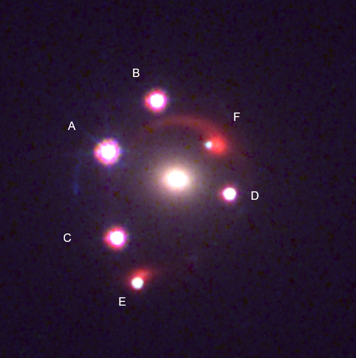
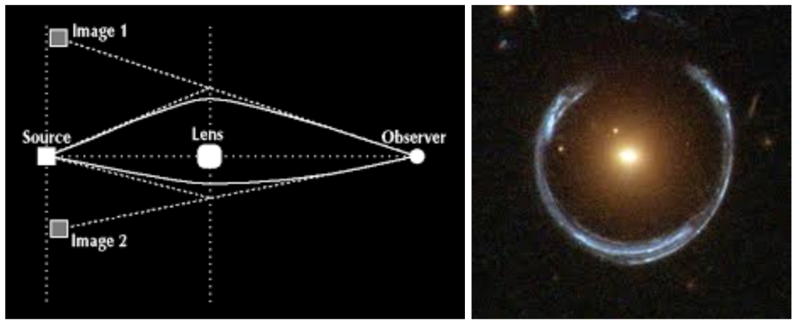

Key Question
What is the best theoretical model to describe this system?

Definitions
Gravitational lensing: An astrophysical phenomenon where a massive galaxy present in between the observer and the source bends light being emitted by the source, such that the observer sees distorted (weakly lensed) or multiple (strongly lensed) images of the same source.

Einstein zig-zag lens: A gravitational lens system with two lenses, where two light rays from the source cross the optical path between the lenses.

AGN: Active Galactic Nuclei are galaxies with an actively accreting (consuming matter) supermassive black hole (SMBH) at their center. The matter forms a very bright (one of the brightest phenomena in the universe) accretion disc as it spirals into the SMBH. An AGN might also contain twin jets of gas and dust ejected from the center of the galaxy that can rival the galaxy's own size. High redshift AGN are often referred to as quasars.

Redshift (denoted by z): As light moves through expanding space, its waveform gets stretched out, increasing its wavelength and making it redder. Redshift is a measure of this stretching, and is used to determine how far astrophysical objects are from us by relating the stretch in wavelength to distance traveled through expanding space. Higher redshift => object is further away => we are looking further back in time as we are seeing light that left the object millions or billions of years ago.
Flux: Amount of light captured by the camera. Higher flux results in a brighter image.
SIS/SIE/PEMD: All of these are separate models for the mass distribution in a galaxy. SIS is the simplest model for a spherical galaxy where mass falls off by a power of 2. SIE adds two parameters to SIS for ellipticity. PEMD adds one additional parameter to SIE for the slope of the mass distribution power law.
Shear: Adds two parameters to add ellipticity to any model without having to align it with the elliptical shape of the galaxy observed in the optical data. This is usually used if the lens is a part of a cluster, or to describe galaxies using an SIS+shear model instead of an SIE. An SIE+shear model is usually used to model an elliptical galaxy in a cluster to model angular properties from the lens galaxy and uncorrelated angular properties from surrounding matter.
Recoil: Merging black holes release a massive amount of energy in the form of gravitational waves, and this can happen anisotropically, kicking the resulting black hole in a direction opposite to the released gravitational waves. This kick is stronger in systems with more asymmetry in the sizes of the merging black holes.
Parsecs (pc) and kiloparsecs (kpc): Units of distance used in astrophysics. 1 pc is approximately 3.26 light years. 1 kpc is approximately 3,260 light-years, that is, it takes light about 3,260 years to cross 1 kpc.
Sources
F. D. et al. — “Year and title blinded from debate judges.”
C. S. M. et al. — “Year and title blinded from debate judges.”
Exactly one of these debater's answers matches the answer of the expert who wrote the Key Question.
| Debater A: [Opening] The Einstein zig-zag lens model (F. D. et al.) with two deflectors (white galaxy and red galaxy behind it) at different redshifts, and one AGN which produces 6 lensed images after being lensed by both deflectors. 👎 Debater B registers main objection |
Debater B: [Opening] The gravitationally lensed dual-AGN model (C. S. M. et al.), with the first AGN corresponding to the four brightest images and the second AGN corresponding to the two dim images next to the extended red arcs. 👎 Debater A registers main objection |
| Debater B: [Argument 1] The model is overfit, due to the modeling decisions made for the second deflector and the galaxies in the first deflector's plane. 👎 Debater A registers main objection Also, F. D. et al. do not quantify or report chi-squared error, an important index of image reconstruction error. 👍 Debater A fully agrees |
Debater A: [Argument 1] Spectroscopy constrains the redshift of the lensed red galaxy to be 1.88, which places it between the main deflector and alleged dual-AGN. 👍 Debater B fully agrees The lens model should include the mass profile of the red galaxy in order to be valid, but it does not. 👎 Debater B registers main objection |
| Debater A: [Response 1] The mass profile of the second deflector will have a significant effect on the modelling when it is close to the optical axis. 👍🚩 Debater B agrees but thinks this omits key info Taking galaxy positions into account allows one to more accurately model a more complex mass distribution than a simple shear. 👎 Debater B objects to the idea that these claims refute their argument (main objection)👍🚩 Debater B agrees but thinks this omits key info |
Debater B: [Response 1] Inclusion of the red galaxy in the lens model will only produce minor changes in the caustics at the redshift of the dual-AGN. 👍🚩 Debater A agrees but thinks this omits key info The added mass will allow for a larger separation between the two AGN. 👎 Debater A objects to the idea that these claims refute their argument (main objection)👍🚩 Debater A agrees but thinks this omits key info |
| Debater B: [Argument 2] This fails to reveal that the model has 30 total parameters, compared to 12 parameters used in other work. 👍 Debater A fully agrees This provides an enormous degree of modelling flexibility and results in overfitting. 👎 Debater A registers main objection |
Debater A: [Argument 2] The presence of a second deflector enables models where one source can produce 6 observed images. 👍 Debater B fully agrees Models with only one AGN cannot be ruled out in favour of a dual-AGN system. 👎 Debater B registers main objection |
| Debater A: [Response 2] A simpler model is not necessarily a correct model. 👍🚩 Debater B agrees but thinks this omits key info 15 parameters in our model are partially constrained, which cannot be considered full degrees of freedom. 👎 Debater B objects to the idea that these claims refute their argument (main objection)👍🚩 Debater B agrees but thinks this omits key info |
Debater B: [Response 2] A single source being lensed to produce 6 images requires a specific morphology which has never been observed before. 👍🚩 Debater A agrees but thinks this omits key info A dual-AGN is a well observed phenomenon that supports the model without the need for overly complicated hypotheses. 👎 Debater A objects to the idea that these claims refute their argument (main objection)👍🚩 Debater A agrees but thinks this omits key info |
| Debater B: [Argument 3] Constraints don't fix them in place: they are determined via different models that come with their own errors. 👍 Debater A fully agrees All galaxy positions and redshifts except the main deflector can vary considerably, adding more freedom to an already complex model. 👎 Debater A registers main objection |
Debater A: [Argument 3] Light curves for all 6 lensed images display the same variations with brief offsets (e.g. 35 days between D and E), and the same redshifts. C. S. M. et al. posit AGN 6 kpc apart. 👍 Debater B fully agrees Light curves this similar can only be generated by a single source. 👎 Debater B registers main objection |
| Debater A: [Response 3] NIRSpec spectroscopy provides tight constraints for the second deflector's redshift independent of the lens model. 👍🚩 Debater B agrees but thinks this omits key info HST imaging constrains positions to sub-arcsecond precision. 👎 Debater B objects to the idea that these claims refute their argument (main objection)👍🚩 Debater B agrees but thinks this omits key info |
Debater B: [Response 3] Activity in one AGN can set off activity in the other AGN in a dual-AGN system, causing correlated emissions. 👍🚩 Debater A agrees but thinks this omits key info Correlated emissions can make two different objects look like a single object. 👎 Debater A objects to the idea that these claims refute their argument (main objection)👍🚩 Debater A agrees but thinks this omits key info |